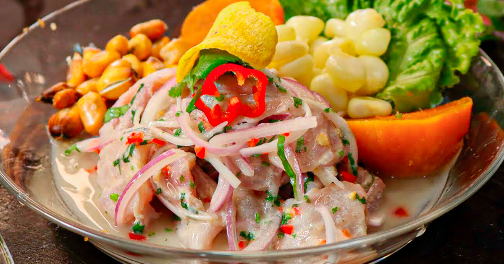

Ceviche

Ceviche is the pride of Peru and the national dish.
Fresh fish “cooked” in lime juice, onion and chilies and served with
sweet potato, toasted corn “cancha” and salsa criolla.
The light, sharp taste of ceviche is extremely popular, and the quality
of the dish is seen as the measure of any restaurant.
Ingredients
- 1 lb (500g) flounder, sea bass or other firm white fish fillets
- Red onion, finely sliced
- Red aji limo (small red chilies), chopped into thin strips
- Aji amarillo, (yellow chili) chopped fine
- Juice of 8 key limes
- Salt to taste
Steps
- Cut the fish into small chunks and mix with onion in a bowl. Wash the mix well in cold water.
- Season with the aji limo, aji amarillo and salt.
- Toss the mixture in the lime juice, adding a few ice cubes to freshen the fish.
- Take the ice out before it melts.
- Serve immediately with boiled corncobs known as “choclo,” boiled sweet potato and lettuce.
Return to main page